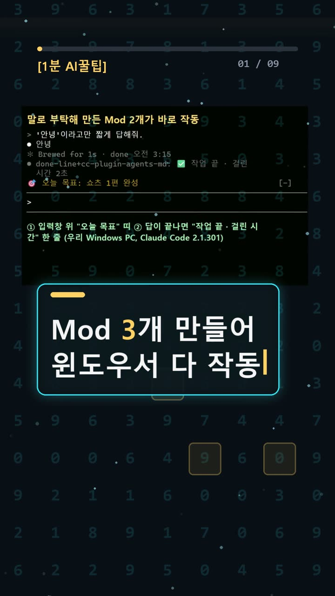
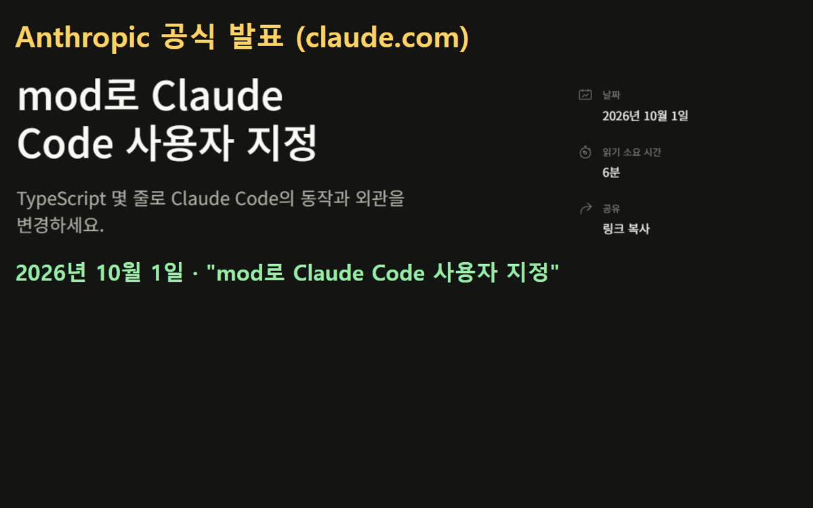
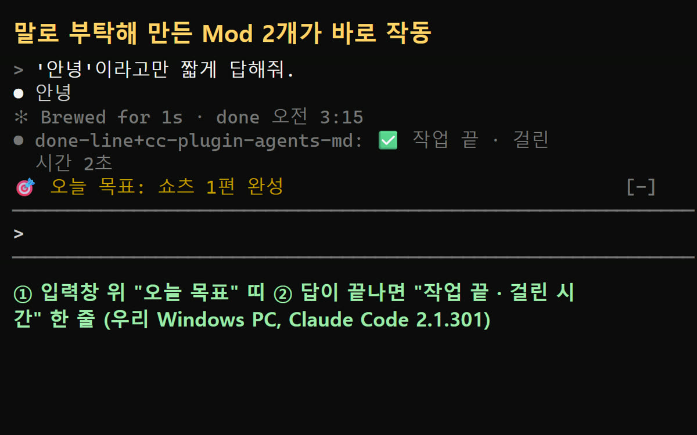
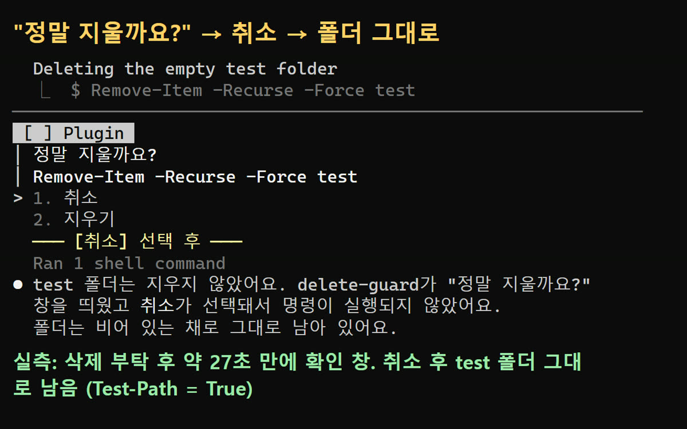

이 포스팅은 쿠팡 파트너스 및 토스쇼핑 쉐어링크 활동의 일환으로, 이에 따른 일정액의 수수료를 제공받습니다.
클로드 코드 Mods 윈도우 실측: 삭제 확인 Mod 1분 만에 완성
한눈에 보기
- Mods(모드)는 Claude Code의 화면과 동작을 바꾸는 작은 TypeScript 함수입니다. Claude에게 말로 부탁하면 대신 만들어 줍니다. Anthropic이 2026년 10월 1일 [공식 블로그](https://claude.com/blog/claude-code-mods)에서 발표했고, 터미널 v2.1.287부터 기본으로 켜져 있습니다.
- 우리 Windows PC(Claude Code 2.1.301)에서 Mod 3개를 직접 만들었습니다. 입력창 위 목표 띠, 삭제 전 확인, 작업 끝 한 줄입니다. 3개 모두 작동했습니다.
- 다만 말만 하면 바로 바뀌지는 않습니다. 파일마다 승인 클릭을 해야 하고 '핫 리로드'도 승인해야 합니다. 이렇게 만든 Mod는 그 세션에서만 켜집니다.

시작 전에 확인할 것
- 버전(프로그램이 몇 번째 판인지 나타내는 숫자): 터미널(명령어를 글자로 입력하는 검은 창)은 v2.1.287 이상이어야 합니다. 데스크톱 앱 Code 탭은 v2.1.286 이상입니다. Mods는 처음부터 켜져 있습니다. ([공식 문서 Mods overview](https://code.claude.com/docs/en/plugins/mods/overview))
- 계정: Claude 구독이나 Anthropic Console 계정이 있어야 합니다. 데스크톱 앱은 유료 구독이 필요합니다. 새로 가입하거나 API 키를 넣을 필요는 없었습니다. 이미 로그인된 계정을 그대로 썼습니다.
- 요금: Mod를 만든다고 따로 돈을 내지는 않습니다. 하지만 Claude에게 부탁한 만큼 구독 사용량이 줄어듭니다. 이번 시험은 Opus 5.5, Max 요금제로 했습니다.
- OS: Windows(PowerShell)·macOS·Linux·WSL에서 됩니다. 데스크톱 앱의 WSL 세션에서는 Mod가 안 됩니다. Windows에 Git Bash가 없으면 Claude Code는 PowerShell로 명령을 실행합니다.
- 보안: Mod는 샌드박스(바깥과 막힌 안전 공간) 없이 내 컴퓨터에서 Claude Code와 같은 권한으로 돌아갑니다. 그래서 공식 블로그도 믿을 수 있는 출처의 Mod만 설치하라고 경고합니다.
- 회사 PC: 조직 관리 설정에 따라 관리자가 Mod를 막아 둘 수 있습니다.
설치 방법
1단계. Claude Code 설치 📄 공식 문서 기준 ([Quickstart](https://code.claude.com/docs/en/quickstart))
터미널에 내 컴퓨터에 맞는 명령어 하나를 붙여넣습니다. Windows에서 화면에 PS C:\가 보이면 PowerShell용을 쓰세요.
# Windows PowerShell irm https://claude.ai/install.ps1 | iex
:: Windows CMD curl -fsSL https://claude.ai/install.cmd -o install.cmd && install.cmd && del install.cmd
# macOS, Linux, WSL curl -fsSL https://claude.ai/install.sh | bash
- 이게 보이면 성공: 설치하는 동안 진행 표시가 없어도 정상입니다. 설치가 끝나면 새 터미널 창을 열고 다음 단계로 갑니다.
2단계. 버전 확인 ✅ 직접 해 봄
claude --version
- 이게 보이면 성공: 숫자 뒤에
(Claude Code)가 붙어 나옵니다. 2.1.287 이상이면 됩니다. 우리 PC는 2.1.301이었습니다. - 😥 우리는 여기서 막혔어요: 우리 PC는 PATH(명령어를 찾는 폴더 목록)에 claude가 없었습니다. 그래서
claude만 쳐서는 실행되지 않았습니다. 이미 깔려 있던 다른 프로그램(Aside) 안의 Claude Code 사본으로 시험했습니다.
3단계. 버전이 낮으면 업데이트 📄 공식 문서 기준 ([Setup](https://code.claude.com/docs/en/setup))
claude update
- 이게 보이면 성공:
Successfully updated from <old version> to version <new version>또는Claude Code is up to date (<version>)
4단계. 폴더로 가서 실행 ✅ 직접 해 봄
cd your-project claude
- 처음 켜면 안내 화면이 몇 개 나옵니다. 우리는 테마는 기본값(Dark)으로 두고, 보안 안내에서 Enter를 눌렀습니다. 폴더 신뢰는 'Yes', 크롬 브라우저 도구는 'No(끄기)'를 골랐습니다.
사용 방법
1단계. 시험용 폴더에서 켜기 ✅ 직접 해 봄 우리는 운영 설정과 섞이지 않도록 빈 격리 폴더에서 실행했습니다. 이 PC는 원래 Auto 모드라서, 승인 창을 직접 보려고 이번 세션만 수동 승인 모드로 켰습니다.
claude --permission-mode default
2단계. 원하는 Mod를 말로 부탁하기 ✅ 직접 해 봄 예: "입력창 위에 '오늘 목표: 쇼츠 1편 완성' 띠를 항상 보여 주는 mod를 만들어줘. 간단하게."
3단계. 승인하기 ✅ 직접 해 봄 Claude가 Mod 파일을 만들 때마다 승인 창이 뜹니다. 'Yes'를 누릅니다. 처음 파일을 저장할 때 '핫 리로드(껐다 켜지 않고 바로 불러오기)를 이 세션에서 켤까요?'라고 물으면 Enable for this session을 고릅니다.
4단계. 답변이 끝나면 확인 ✅ 직접 해 봄 그 답변(턴)이 끝나는 순간 화면에 반영됩니다. 📄 /plugin → Installed 탭에서 로드된 Mod를 보거나 끌 수 있습니다(공식 문서 기준).
5단계. 계속 쓰고 싶다면 📄 공식 문서 기준 ([Create a mod](https://code.claude.com/docs/en/plugins/mods/create)) 만든 Mod는 ~/.claude/dev-mods/<세션ID>/ 폴더에 저장되고 그 세션에서만 켜집니다. 계속 쓰려면 폴더를 다른 곳에 복사한 뒤 claude --plugin-dir <폴더>로 실행합니다.
6단계. 남이 만든 Mod는 검사부터 설치하기 전에 claude plugin validate <폴더>로 하는 일을 확인합니다. 이번 시험에서도 Claude가 Mod를 만들 때마다 이 검사를 돌렸고 3개 모두 통과했습니다.
우리가 직접 해 본 결과
확인 수준: verified (2026-10-19 새벽, Windows, Claude Code 2.1.301)
| Mod | 부탁한 내용 | 부탁 후 완성까지 | 승인 클릭 | 결과 | |---|---|---|---|---| | goal-band | 입력창 위 '오늘 목표' 띠 | 약 3~4분 | 8번 | ✅ 띠 표시 | | delete-guard | 삭제 명령 전에 '정말 지울까요?' | 약 1분 | 5번 | ✅ 삭제 붙잡음 | | done-line | 답 끝에 '✅ 작업 끝 · 걸린 시간 N초' | 약 50초 | 4번 | ✅ 한 줄 표시 |

삭제 시험: 격리 폴더의 빈 test 폴더를 rm -rf test로 지워 달라고 했습니다. 약 25초 뒤 delete-guard가 '정말 지울까요? / 1. 취소 2. 지우기' 창을 띄웠습니다. Claude Code 기본 권한 질문보다 먼저 떴습니다. '1. 취소'를 누르자 Claude가 실행하지 않았다고 보고했고, PowerShell Test-Path로 확인하니 폴더가 그대로 있었습니다(True).

예상과 달랐던 점: Windows에 Git Bash가 없어서, Claude가 rm -rf test를 실제로는 Remove-Item -Recurse -Force test로 바꿔 실행하려 했습니다. 삭제 확인 Mod를 만들 때 rm -rf만 넣었다면 놓쳤을 수도 있습니다. 우리는 처음부터 Remove-Item -Recurse도 함께 넣어 달라고 했습니다.
솔직하게 밝히는 부분
- 걸린 시간은 3~4초 간격으로 화면을 보며 잰 값이라 몇 초 오차가 있습니다. 원격 조작이라 느렸던 승인 대기 시간도 들어 있습니다. Claude가 화면에 표시한 작업 시간은 55초·28초·29초였습니다.
- 캡처 2·3은 화면을 그대로 찍은 사진이 아닙니다. 콘솔 화면 버퍼의 글자와 색을 읽어 큰 글씨로 다시 그렸습니다(색은 16색 근사). 글자 내용은 실제 화면과 같습니다.
- 자동 조작 도구로는 터미널에 Enter 키가 들어가지 않았습니다. 그래서 키 입력용 보조 스크립트를 따로 만들어 썼습니다. Claude Code 자체 문제는 아닙니다.
- '작업 끝 알림'은 운영 원칙상 팝업과 소리를 쓰지 않고 대화창 한 줄로 만들었습니다. 공식 API에 있는 네이티브 알림(
$.ui.notify)은 시험하지 않았습니다. - 시험하는 동안 Claude Code가 스스로 자동 업데이트를 받아, 끝나고 보니 2.1.301에서 2.1.302로 바뀌어 있었습니다.
자주 막히는 곳

claude를 쳐도 실행이 안 돼요 → PATH에 claude가 없을 수 있습니다. 우리 PC도 그랬습니다(설치 방법 2단계 참고).- Mod가 화면에 안 나와요 →
claude --version으로 2.1.287 이상인지 먼저 보세요. 핫 리로드를 승인했는지, 답변이 끝났는지도 확인하세요. Mod는 턴이 끝나야 반영됩니다. - 다음에 켜니 Mod가 사라졌어요 → 정상입니다. 말로 만든 Mod는 그 세션에서만 켜집니다. 폴더를 복사해
--plugin-dir로 불러오세요. - 화면 표시가 안 나와요 →
claude -p와 클라우드 세션에서는 훅만 돌고 화면 표시는 되지 않습니다. 데스크톱 앱의 WSL 세션은 Mod 자체가 안 됩니다. - Windows에서 삭제 확인 Mod가 안 걸려요 → PowerShell에서는 삭제 명령이
Remove-Item -Recurse로 바뀝니다. 그 형태도 붙잡도록 부탁하세요. - 위험 명령 붙잡기가 기본 기능인 줄 알았어요 → 아닙니다. 공식 샘플 Mod 'blast-radius'를 받거나 직접 만들어야 합니다(지원 없는 예시).
🧰 오늘의 실험실 생존 세트 — 밤새 실험 돌릴 때 쟁여 두는 것들
 🥤 음료/생수제주삼다수 2L 6개별점 5 · 후기 1,458,835쿠팡에서 보기
🥤 음료/생수제주삼다수 2L 6개별점 5 · 후기 1,458,835쿠팡에서 보기 🍜 라면/간식오뚜기 열라면 컵 12개별점 5.0 · 후기 15,507쿠팡에서 보기
🍜 라면/간식오뚜기 열라면 컵 12개별점 5.0 · 후기 15,507쿠팡에서 보기 🍳 육류/간편식/식료품오뚜기 흰밥 12개별점 5 · 후기 855,891쿠팡에서 보기
🍳 육류/간편식/식료품오뚜기 흰밥 12개별점 5 · 후기 855,891쿠팡에서 보기 🧴 화장품/바디케어/생필품코멧 3겹 화장지 30롤별점 4.5 · 후기 932,319쿠팡에서 보기🥤 마실 것(음료·커피·생수)던킨 제로 아이스티별점 4.8 · 후기 5,386토스쇼핑에서 보기🍪 먹을 것(간식·라면·간편식·식료품)애슐리 볶음밥 10종별점 4.7 · 후기 11,315토스쇼핑에서 보기🧴 바를 것·생필품(화장품·바디케어·생활소모품)베베앙 물티슈 10팩별점 4.8 · 후기 15,851토스쇼핑에서 보기
🧴 화장품/바디케어/생필품코멧 3겹 화장지 30롤별점 4.5 · 후기 932,319쿠팡에서 보기🥤 마실 것(음료·커피·생수)던킨 제로 아이스티별점 4.8 · 후기 5,386토스쇼핑에서 보기🍪 먹을 것(간식·라면·간편식·식료품)애슐리 볶음밥 10종별점 4.7 · 후기 11,315토스쇼핑에서 보기🧴 바를 것·생필품(화장품·바디케어·생활소모품)베베앙 물티슈 10팩별점 4.8 · 후기 15,851토스쇼핑에서 보기정리
Claude Code Mods는 말로 부탁해 내 작업 화면을 바꾸는 기능입니다. Windows에서도 잘 작동했습니다. 삭제 확인 Mod는 약 1분 만에 만들어졌고, 실제로 삭제를 붙잡았습니다. 다만 승인 클릭과 핫 리로드 승인이 필요하고, 세션이 끝나면 꺼지며, 샌드박스 없이 내 권한으로 돈다는 점은 꼭 기억하세요.
이번 결과는 PC 1대에서 Mod 3개를 1회씩 시험한 것이라 다른 환경에서는 다를 수 있습니다. 쇼츠 영상은 [여기](https://youtube.com/shorts/WpRbF1bxTls), 기록 원문은 [AI 실험노트](https://compaction19-blip.github.io/)에 모아 두었습니다. 이 글은 실제 시험 기록을 바탕으로 AI 도구와 함께 정리했습니다.
혹시 글에서 틀린 부분이나 고쳐야 할 부분이 보이면 유튜브·스레드 댓글로 알려 주시면 정말 감사하겠습니다. 바로 확인해서 고칠게요!
🛒 다시 보기: 오늘의 생존 세트
🥤 음료/생수제주삼다수 2L 6개별점 5 · 후기 1,458,835쿠팡에서 보기🍜 라면/간식오뚜기 열라면 컵 12개별점 5.0 · 후기 15,507쿠팡에서 보기🍳 육류/간편식/식료품오뚜기 흰밥 12개별점 5 · 후기 855,891쿠팡에서 보기🧴 화장품/바디케어/생필품코멧 3겹 화장지 30롤별점 4.5 · 후기 932,319쿠팡에서 보기🥤 마실 것(음료·커피·생수)던킨 제로 아이스티별점 4.8 · 후기 5,386토스쇼핑에서 보기🍪 먹을 것(간식·라면·간편식·식료품)애슐리 볶음밥 10종별점 4.7 · 후기 11,315토스쇼핑에서 보기🧴 바를 것·생필품(화장품·바디케어·생활소모품)베베앙 물티슈 10팩별점 4.8 · 후기 15,851토스쇼핑에서 보기🎙️ AI 음성이 궁금하다면
우리 채널 내레이션은 타입캐스트를 쓰지만, 영어·다국어 AI 음성을 실험해 보고 싶다면 ElevenLabs도 많이 쓰여요.
ElevenLabs 둘러보기 (제휴)🎬 쇼츠로 다시 보기 · 🧵 함께 이야기하기
🧵 스레드 @alligatorxor에서 오늘 실험 이야기 나누기 · ▶ 유튜브 새AI실험노트 다른 쇼츠 보기 · 📒 실험노트 홈